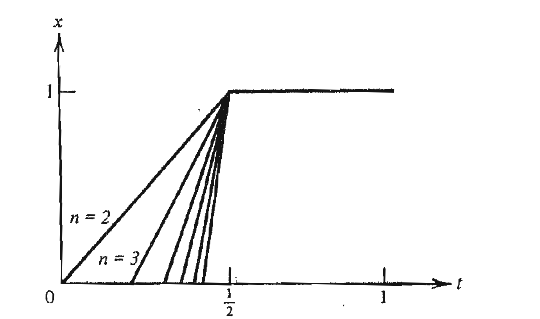
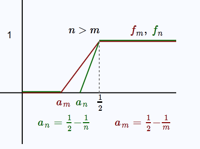

Ders 5
Teori
Bir küme $F$ kapalıdır (closed), eğer $F$ içindeki her yakınsayan dizinin limiti yine $F$ içindeyse [ispat atlandı].
Tanım
Vektörü uzayı $X$'ten reel (ya da kompleks) skalar uzayına yapılan transformasyona $X$ üzerinde tanımlı bir fonksiyonel denir.
Dikkat fonksiyon değil, fonksiyonel. Fonksiyonelleri diğer daha genel transformasyonlardan ayırtetmek için onlara notasyon olarak küçük harfler verilir, mesela $f,g$ gibi.
Norm edilmiş uzayda $f(x) = ||x||$ bir fonksiyonel örneğidir. Yani norm operatörünün kendisi de bir fonksiyoneldir. Reel değerli fonksiyoneller optimizasyon teorisi açısından çok önemlidir normal olarak çünkü optimizasyonun amacı bir fonksiyoneli minimize (ya da maksimize) edecek bir vektörü bulmaktır.
$l_p$ ve $L_p$ Uzayları
Şimdi derslerin geri kalanında çok kullanacağımız, faydalı olacak bazı klasik norm edilmiş uzayları görelim.
Tanım
$0 < p < \infty$ olacak şekilde $p$ bir reel sayı olsun. $l_p$ uzayı ${ \xi_1,\xi_2,...\xi_n}$ skalar dizisidir, ki bu dizi şu şarta uymalıdır,
$$ \sum_{i=1}^{\infty} |\xi_i|^p < \infty $$
$p$ sayısı tanımlanan uzaya göre değişir, yani $l_3$ olabilir, bir diğeri $l_5$, vs. Bu uzayın normu nedir? Dikkat, üstteki bir norm değil, uzayı tanımlamak için kullandığımız şartlardan biri. Norm,
$$ ||x||p = \bigg( \sum{i=1}^\infty |\xi_i|^p \bigg)^{1/p} $$
$l_\infty$ uzayı tüm sınırlı (bounded) dizileri içinde barındırır. $p = \infty$ kullanılması biraz garip gelebilir, $|\xi_i|$'in hem $\infty$ ile katı alınacak, hem de tüm bu katların toplamı sonsuzluktan küçük olacak!
$l_\infty$ içindeki bir öğe $x = { \xi_i }$'in normu
$$ ||x||_\infty = \sup_i |\xi_i| $$
Banach Uzayları
Tanım
Bir norm edilmiş uzayda ${x_n}$ dizisine Cauchy dizisi denmesinin şartı şudur: Eğer $m,n \to \infty$ iken $||x_n - x_m|| \to 0$ doğru olmalıdır; mesela verilen $\epsilon > 0$ için öyle bir $N$ olmalıdır ki, her $n,m > N$ için $||x_n - x_m|| < \epsilon$ doğru olmalıdır.
Bir norm edilmiş uzayda her yaklaşan dizi Cauchy dizisidir. Eğer $x_n \to x$ ise, o zaman
$$ ||x_n - x_m|| = ||x_n -x +x -x_m|| \le ||x_n - x|| + ||x-x_m|| \to 0 $$
Fakat bu kuralın tersi her zaman doğru olmayabilir, yani her Cauchy dizisi yaklaşıksal olmayabilir.
İçinde her Cauchy dizisinin yakınsayan olduğu norm edilmiş uzaylar analizde özellikle ilgi görür, önemlidir, çünkü bu tür uzaylarda yaklaşıksal dizileri bulmak / göstermek için onların limitlerini bulmak gerekmez (sadece Cauchy olduklarını göstermek yeter). Bu tür norm edilmiş uzaylara tam (complete) uzaylar denir.
Tanım
Norm edilmiş uzay $X$ içindeki her Cauchy dizisinin $X$ içinde bir limiti var ise, bu uzaya tam denir. Tam olan bir norm edilmiş uzaya Banach Uzayı ismi verilir.
Uygulamalarda önümüze çıkan problemleri Banach uzayına olan yansımasını / orada da aynen işleyecek bir versiyonunu / eşdeğerini yaratmak için oldukça çaba sarfederiz. Bu problemleri diğer, çoğunlukla tam olmayan, uzaylardan çıkartmak için çok uğraşırız, çünkü optimizasyon problemlerinde Banach uzaylarının bir avantajı vardır; hedef fonsiyonunu maksimize edecek optimal vektörü bulmak için çoğunlukla bir vektör dizisi yaratırız, ve bu dizideki her eleman bir öncekinden daha iyi olur, ve o zaman aradığımız optimal vektör otomatik olarak bu dizinin limiti olacaktır. Bu tekniğin ise yaraması için limiti hesaplayamıyor olsak bile, bu dizinin yaklaştığını bir şekilde bilmemiz gerekir / bunu bize gösterecek bir test gerekir. Yakınsaklık için Cauchy kriteri işte bunu sağlar, temel aldığımız uzay tam ise, Cauchy dizisinin yaklaşacağından emin olabiliriz.
Şimdi tam olmayan bir norm edilmiş uzay görelim.
Örnek
$X$ uzayı $[0,1]$ üzerinde tanımlı tüm sürekli fonsiyonlar olsun, ve norm $\|x\| = \int_{0}^{1} |x(t)| \mathrm{d} t$. $X$'in tam olmadığını ispat için $X$ içinde şöyle bir dizi yaratacağız,
$$ x_n(t) = \left\{ \begin{array}{ll} 0 & 0 \le t \le \frac{1}{2} - \frac{1}{n} \\ \\ nt-\frac{n}{2} + 1 & \frac{1}{2} - \frac{1}{n} \le t \le \frac{1}{2} \\ \\ 1 & t \ge \frac{1}{2} \end{array} \right. $$
Bu dizinin her elemanı bir sürekli fonsiyondur ve bu yüzden $X$'in bir üyesidir.

Bu dizi Cauchy midir? $||x_n - x_m||$'i hesaplayalım ve $n,m \to \infty$ iken ne oluyor ona bakalım. Aslında hesap için entegralleri cebirsel olarak hesaplamaya gerek yok, entegral $f$'in altındaki alanı hesapladığına göre, görsel olarak düşünebiliriz. Üstteki grafikte gördüğümüz gibi her $n$ yeni bir fonsiyon yaratır. Fakat $n,m$ sonsuza gittikçe ikisi de basamak (step) fonsiyonu olmaya yaklaşacaktır, ve farklarının normu $||x_n - x_m||$ sıfıra yaklaşacaktır. Alan farkı için tam formül

$$ \frac{1}{2} \cdot 1 \cdot (\frac{ 1}{2}-a_m) - \frac{1}{2} \cdot 1 \cdot (\frac{ 1}{2}-a_n) = \frac{ 1}{2}\frac{ 1}{m} - \frac{ 1}{2}\frac{ 1}{n} $$
Yani
$$ ||x_n - x_m|| = \frac{ 1}{2}|1/n - 1/m| $$
Grafikte sadece pozitif kısım gözüküyor çünkü unutmayalım, $t$ değerleri $[0,1]$ arasında geliyor, ve formüldeki tüm parçalar buna göre pozitif değerler üretiyorlar.
Teori
Bir Cauchy dizisi sınırlıdır
İspat
${x_n}$ bir Cauchy dizisi diyelim, ve $N$ öyle bir tam sayı olsun ki $n > N$ için $||x_n - x_N|| < 1$ doğru olacak. $n > N$ için
$$ ||x_n|| = ||x_n - x_N + x_N || \le ||x_N|| + ||x_n - x_N|| < ||x_N|| + 1 $$
$ \square $
Örnek
$C[0,1]$ bir Banach uzayıdır. Daha önce bu uzayın tam olduğunu söylemiştik. $C[0,1]$'in tam olduğunu ispatlamak için $C[0,1]$ içindeki her Cauchy dizisinin bir limiti olduğunu göstermek yeterlidir.
Diyelim ki ${x_n}$ $C[0,1]$ içinde bir Cauchy dizisi. Her sabit $t \in [0,1]$ için $|x_n(t) - x_m(t)| \le ||x_n - x_m|| \to 0$, o zaman ${x_n(t)}$ reel sayılardan oluşan bir Cauchy dizisidir. Bu dizi doğal olarak reel sayılar uzayı $\mathbb{R}$'dedir, ve $\mathbb{R}$'nin tam olduğunu biliyoruz. O zaman bu dizinin yaklaştığı bir $x(t)$ her zaman olacaktır, yani $x_n(t) \to x(t)$. Bunun sonucu olarak $x_n$ fonksiyonları da $x$'e yaklaşmalıdır.
Genel olarak tarif etmek gerekirse, $x_n$ dizisini $\mathbb{R}$'deki bir başka dizi ${x_n(t)}$'ye indirgiyoruz, yani yansımasını yaratıyoruz, seçtiğimiz tek bir $t$ üzerinden. Uzayı değiştirmemizin avantajı şu, $\mathbb{R}$'nin tam olduğunu biliyoruz. O zaman oraya indirgediğimiz Cauchy dizisinin o uzayda muhakkak bir limiti olmalıdır. Şimdi, $\mathbb{R}$'den filmi geriye sarıyoruz, her $t$ için "yukarı çıkarken" elimizdeki limitleri toparlıyoruz, ve $x_n$ seviyesine getiriyoruz. Bunu tüm $t$'ler için yapabildiğimize göre, o zaman tüm $x_n$'nin de bir limiti olmalıdır.